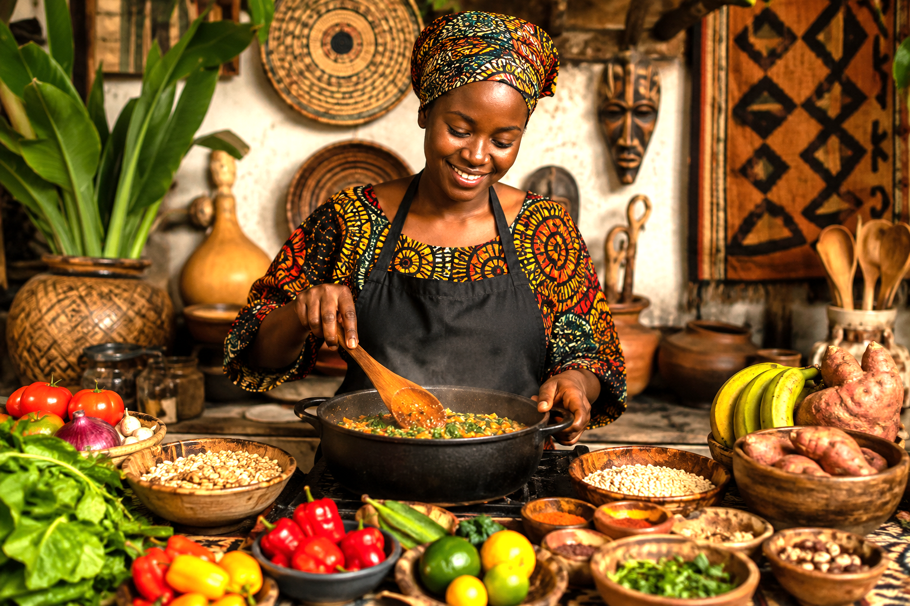
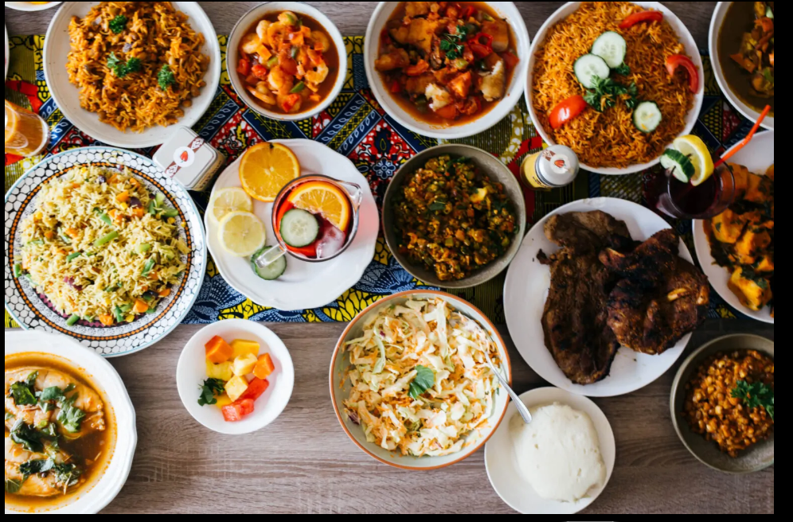

Who We Are
Moon Bite Cuisine is a website dedicated to showcasing the beauty, culture, and diversity of African traditional dishes. We explore meals from different African regions and share their ingredients, preparation methods, and cultural importance.
Our platform helps people discover authentic African cuisine while promoting appreciation for African heritage and food traditions.


Our Vision
Our vision is to become a leading online platform that connects people to African culinary traditions through education, culture, and food.
We aim to inspire people around the world to appreciate African dishes and preserve traditional cooking practices for future generations.
Our Goal
Our goal is to provide visitors with easy access to African recipes, cooking inspiration, and cultural knowledge from different regions across the continent.
We also aim to create an enjoyable experience where users can learn, explore, and celebrate African food in one place.